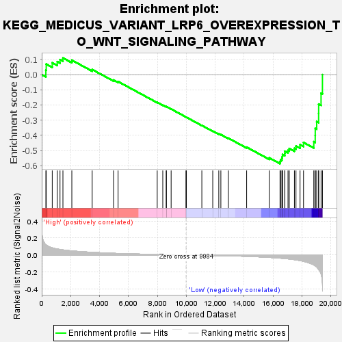
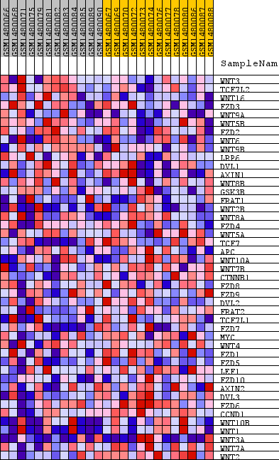
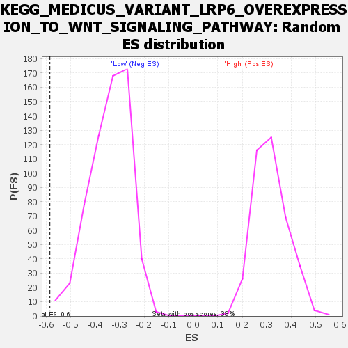

| Dataset | WG6v3.CPT1A.cls#High_versus_Low.CPT1A.cls#High_versus_Low_repos |
| Phenotype | CPT1A.cls#High_versus_Low_repos |
| Upregulated in class | Low |
| GeneSet | KEGG_MEDICUS_VARIANT_LRP6_OVEREXPRESSION_TO_WNT_SIGNALING_PATHWAY |
| Enrichment Score (ES) | -0.58679926 |
| Normalized Enrichment Score (NES) | -1.7220951 |
| Nominal p-value | 0.001607717 |
| FDR q-value | 0.071726725 |
| FWER p-Value | 0.383 |

| SYMBOL | TITLE | RANK IN GENE LIST | RANK METRIC SCORE | RUNNING ES | CORE ENRICHMENT | |
|---|---|---|---|---|---|---|
| 1 | WNT3 | WNT3 | 286 | 0.121 | 0.0285 | No |
| 2 | TCF7L2 | TCF7L2 | 312 | 0.117 | 0.0692 | No |
| 3 | WNT16 | WNT16 | 728 | 0.084 | 0.0779 | No |
| 4 | FZD3 | FZD3 | 1075 | 0.070 | 0.0851 | No |
| 5 | WNT9A | WNT9A | 1265 | 0.065 | 0.0985 | No |
| 6 | WNT5B | WNT5B | 1467 | 0.060 | 0.1095 | No |
| 7 | FZD2 | FZD2 | 2083 | 0.048 | 0.0949 | No |
| 8 | WNT6 | WNT6 | 3491 | 0.031 | 0.0334 | No |
| 9 | WNT9B | WNT9B | 4970 | 0.020 | -0.0359 | No |
| 10 | LRP6 | LRP6 | 5283 | 0.018 | -0.0457 | No |
| 11 | DVL1 | DVL1 | 7989 | 0.006 | -0.1831 | No |
| 12 | AXIN1 | AXIN1 | 8374 | 0.005 | -0.2012 | No |
| 13 | WNT8B | WNT8B | 8614 | 0.004 | -0.2120 | No |
| 14 | GSK3B | GSK3B | 8622 | 0.004 | -0.2109 | No |
| 15 | FRAT1 | FRAT1 | 8952 | 0.003 | -0.2268 | No |
| 16 | WNT2B | WNT2B | 9976 | 0.000 | -0.2796 | No |
| 17 | WNT8A | WNT8A | 10008 | -0.000 | -0.2811 | No |
| 18 | FZD4 | FZD4 | 11076 | -0.003 | -0.3350 | No |
| 19 | WNT5A | WNT5A | 11831 | -0.006 | -0.3718 | No |
| 20 | TCF7 | TCF7 | 12249 | -0.007 | -0.3908 | No |
| 21 | APC | APC | 12392 | -0.008 | -0.3954 | No |
| 22 | WNT10A | WNT10A | 12910 | -0.010 | -0.4186 | No |
| 23 | WNT7B | WNT7B | 14175 | -0.016 | -0.4780 | No |
| 24 | CTNNB1 | CTNNB1 | 15739 | -0.029 | -0.5484 | No |
| 25 | FZD8 | FZD8 | 16484 | -0.037 | -0.5735 | Yes |
| 26 | FZD9 | FZD9 | 16521 | -0.038 | -0.5618 | Yes |
| 27 | DVL2 | DVL2 | 16613 | -0.039 | -0.5526 | Yes |
| 28 | FRAT2 | FRAT2 | 16642 | -0.039 | -0.5400 | Yes |
| 29 | TCF7L1 | TCF7L1 | 16656 | -0.039 | -0.5266 | Yes |
| 30 | FZD7 | FZD7 | 16814 | -0.042 | -0.5196 | Yes |
| 31 | MYC | MYC | 16821 | -0.042 | -0.5048 | Yes |
| 32 | WNT4 | WNT4 | 17037 | -0.046 | -0.4995 | Yes |
| 33 | FZD1 | FZD1 | 17123 | -0.047 | -0.4869 | Yes |
| 34 | FZD5 | FZD5 | 17480 | -0.055 | -0.4856 | Yes |
| 35 | LEF1 | LEF1 | 17589 | -0.058 | -0.4705 | Yes |
| 36 | FZD10 | FZD10 | 17870 | -0.066 | -0.4614 | Yes |
| 37 | AXIN2 | AXIN2 | 18110 | -0.075 | -0.4469 | Yes |
| 38 | DVL3 | DVL3 | 18821 | -0.117 | -0.4418 | Yes |
| 39 | FZD6 | FZD6 | 18919 | -0.128 | -0.4009 | Yes |
| 40 | CCND1 | CCND1 | 18922 | -0.129 | -0.3551 | Yes |
| 41 | WNT10B | WNT10B | 19021 | -0.141 | -0.3096 | Yes |
| 42 | WNT1 | WNT1 | 19154 | -0.170 | -0.2556 | Yes |
| 43 | WNT3A | WNT3A | 19157 | -0.172 | -0.1943 | Yes |
| 44 | WNT7A | WNT7A | 19323 | -0.224 | -0.1227 | Yes |
| 45 | WNT2 | WNT2 | 19419 | -0.358 | 0.0002 | Yes |

